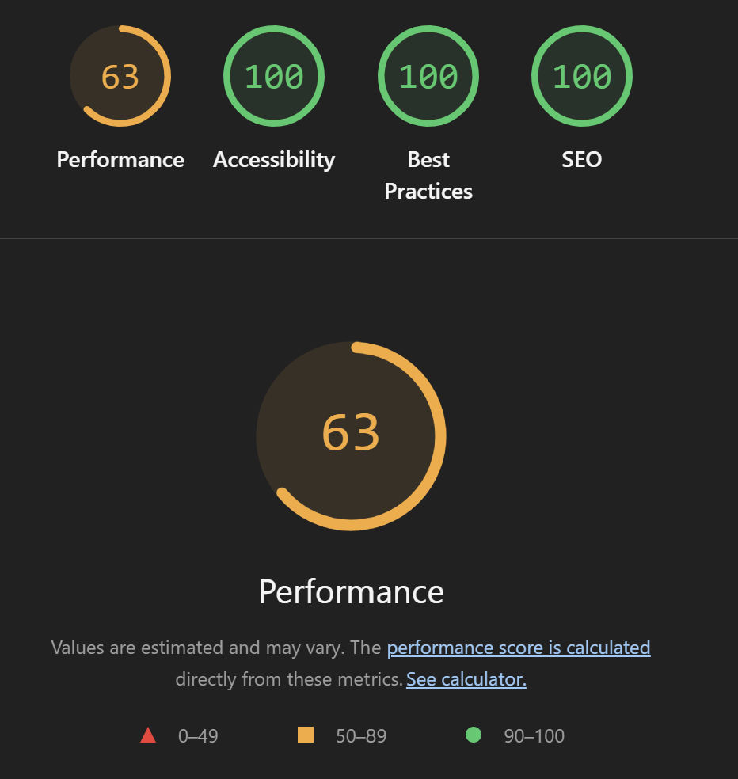
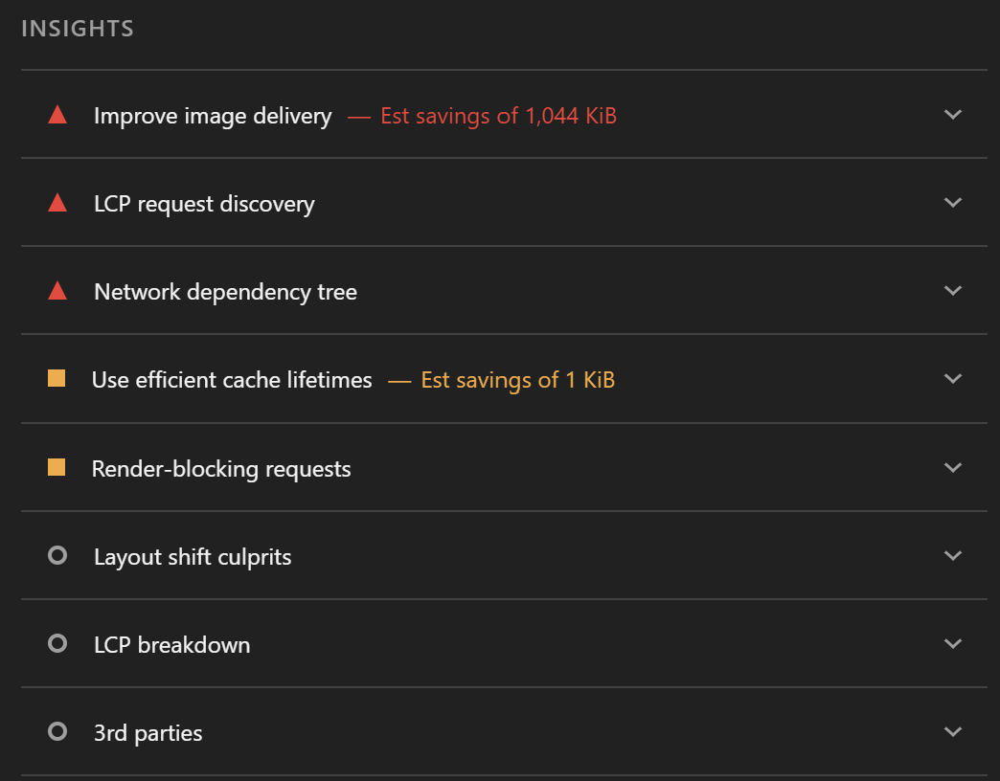
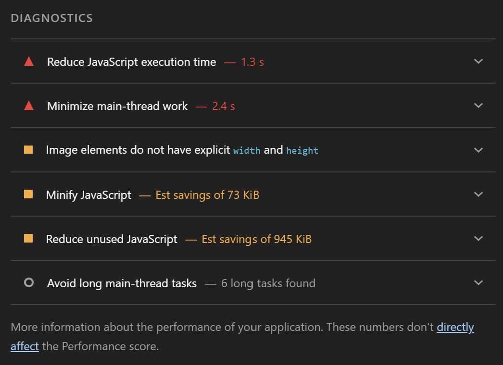

Assignment 10 - Mobile Ready
For this assignment, I updated my website to make it easier to use on mobile devices. I adjusted the navigation, spacing, and layout using CSS media queries.
After making these changes, I tested my homepage using Google Chrome Lighthouse in Mobile and Navigation mode.
Test Date: November 1, 2026
Website Tested: My Homepage
Lighthouse Audit Scores
63
Performance
Needs Improvement100
Accessibility
Passed100
Best Practices
Passed100
SEO
PassedI was happy to see that my website received perfect scores in Accessibility, Best Practices, and SEO. The Performance score was lower, which showed me that there are still areas where the website could load faster.
Overall Lighthouse Results

Performance Issues
Lighthouse identified several opportunities to improve the performance of my homepage. The largest issue was image delivery.
| Issue | Lighthouse Finding |
|---|---|
| Image Delivery | 1,044 KiB potential savings |
| JavaScript Execution | 1.3 seconds |
| Main-Thread Work | 2.4 seconds |
| Unused JavaScript | 945 KiB potential savings |
| JavaScript Minification | 73 KiB potential savings |
| Image Dimensions | Missing explicit width and height attributes |
| Cache Lifetimes | 1 KiB potential savings |
| Long Tasks | 6 long tasks detected |
Performance Insights Screenshot

Diagnostics Screenshot

My Analysis
The Lighthouse results helped me understand that a website can look good and still have performance issues. My homepage uses a large image, and Lighthouse showed that improving image delivery could make a noticeable difference in loading speed.
I also noticed several JavaScript warnings. Since my homepage does not directly use JavaScript, I looked more closely at the report. Some of the JavaScript resources came from browser extensions, so I would need to test again without extensions to get a clearer picture of my website's actual performance.
Overall, I am satisfied with the mobile improvements. The navigation is designed to stack vertically on smaller screens, and the image automatically adjusts to the available width. In the future, I would focus on optimizing the homepage image and testing on different devices.
Complete Lighthouse Report
The full Lighthouse HTML report is also available below for a more detailed breakdown of the audit results.
View Full Lighthouse Report